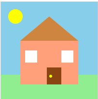
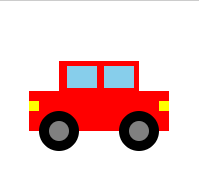
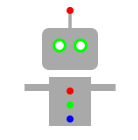

imagenes vectorials (SVG)
imagenes de mapa de bits



Diferencias
- Las imágenes de mapa de bits están formadas por píxeles y tienen una resolución fija.
- Al ampliar una imagen de mapa de bits, pierde calidad y puede verse pixelada.
- Las imágenes SVG son vectoriales y se generan mediante código (XML).
- Los SVG se pueden ampliar o reducir sin perder calidad.
- Las imágenes SVG suelen ocupar menos espacio cuando contienen gráficos simples.
- Los SVG permiten modificar colores y formas directamente desde el código HTML o CSS.
- Al convertir un SVG en una imagen de mapa de bits se pierde la ventaja de la escalabilidad.
- Los SVG son ideales para iconos, logotipos y gráficos web.
- Las imágenes de mapa de bits son más adecuadas para fotografías.